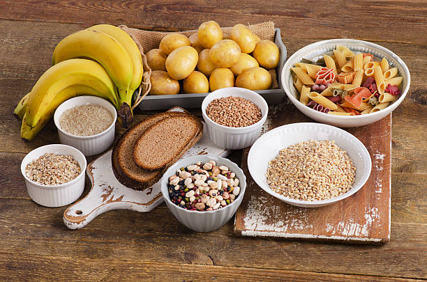
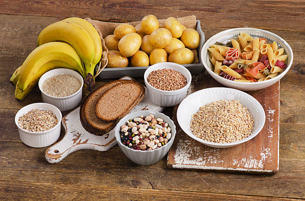
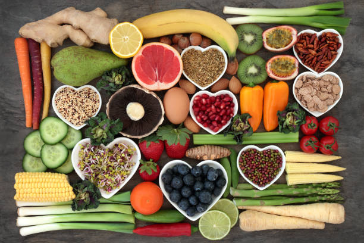
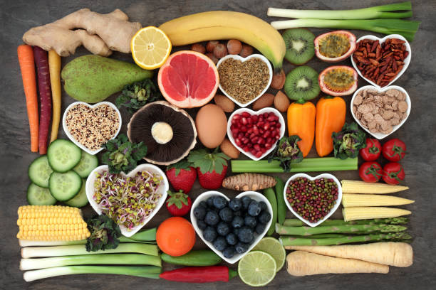
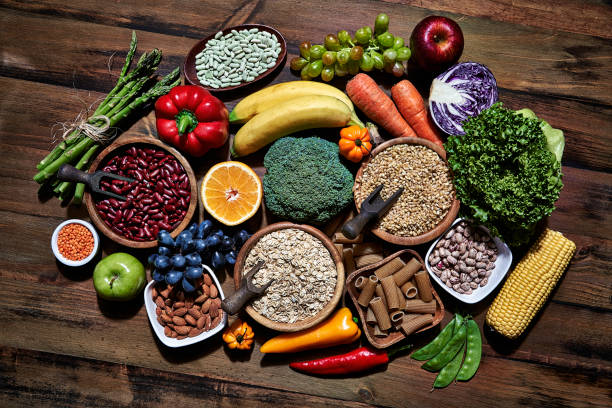
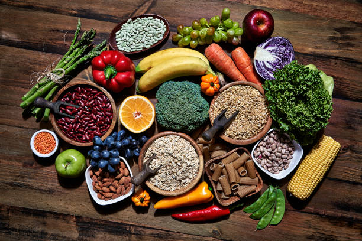

Carbohydrates
Carbohydrates are the body's primary energy source. They include sugars, starches and fiber found in fruits, grains and vegetables. They are central to many diets and sports nutrition plans.
- Bread
- Rice
- Pasta
- Potatoes
- Oats
 

:max_bytes(150000):strip_icc()/254517-spaghetti-sauce-with-fresh-tomatoes-3x2-79-609ce4edcafb4191b609180163fed92b.jpg)
Proteins
Proteins build and repair tissues and are essential for enzymes and hormones. A balanced diet includes both animal and plant protein sources to meet amino acid needs.
- Chicken
- Eggs
- Beans
- Tofu
- Fish


Fats
Fats are energy-dense nutrients required for absorption of fat-soluble vitamins and for cell structure. Healthy fats (unsaturated) are recommended in moderate amounts for overall health.
- Olive oil
- Avocado
- Nuts (almonds, walnuts)
- Butter
- Fatty fish (salmon)


Vitamins
Vitamins are organic compounds needed in small amounts for metabolism and growth. They are found abundantly in fruits, vegetables and fortified foods and are classified by solubility (fat vs water soluble).
- Citrus fruits (vitamin C)
- Leafy greens (vitamin K)
- Egg yolks (vitamin D)
- Carrots (vitamin A)
- Nuts and seeds (vitamin E)


Minerals
Minerals like calcium, iron and potassium are inorganic nutrients necessary for bone health, oxygen transport and fluid balance. They come from a variety of whole foods and sometimes fortified products.
- Milk (calcium)
- Spinach (iron)
- Bananas (potassium)
- Seafood (iodine)
- Salt (iodized)
 


Fiber
Dietary fiber helps digestion and supports gut health. It occurs in whole grains, legumes, vegetables and fruits and supports steady blood sugar levels.
- Beans and lentils
- Whole-grain bread
- Oats
- Broccoli
- Apples
 


Water
Water is essential for life: it hydrates every tissue, helps regulate temperature, and enables transport of nutrients and waste. Though often not called "food", it is a vital dietary component.
- Mineral water (bottled)
- Spring water
- Tap water (treated)